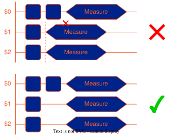

Hardware Constraints
The Zurich Instruments hardware used by NQCT places some constraints on structure of the OpenQASM/OpenPulse scripts. The limitations and subsequent requirements on the scripts shall be outlined here.
Hardware Specifications
The scripts can call upon a sampling time dt. This is evaluated contextually on the pulse line (e.g. flux, drive etc.). For ease of use, all sample rates are fixed at 2Gs/s or dt of 0.5ns.
Measurement Pulses
OpenQASM3
One can place measure commands anywhere in the timing diagram subject to the constraint that overlapping measurement pulses across multiple qubits must begin at the same time:

Overlapping measurement pulses across multiple qubits must begin at the same time.
Note
Aligning measurement operations to begin at the same time. Use the alignment construct delay[0] to automatically align the qubits in the scheduled timing diagram. For example, to align qubits q[0], q[1] and q[2], the call delay[0] q[0], q[1], q[2]; or delay[0] q; (if q is defined as a 3-qubit register) before running the measurement operations.
This limitation exists because the readout pulses are multiplexed on a single feedline. When measurement pulses overlap, a different numerical waveform must be calculated and then played onto that feedline. Since overlapping cascading measurements could in theory make the waveform unbounded in length, the hardware architecture simplifies the problem by enforcing the rule that they must begin at the same time.
Another limitation is that subsequent measurement operations on a given qubit must be separated by 30ns. Finally, measurement (specifically acquisition) operations must align onto an 8ns timing grid. The parser automatically takes care of this by adding an automatic delay before the measurement operation. This delay appears on the compiled schedule timing diagram.
OpenPulse
Measurement pulses created via OpenPulse constructs are limited to a single fixed pulse envelope per qubit per experiment. That is, within a single measurement shot, the pulse envelope must not change between measurement pulses.
Summary
Limitation |
Domain |
User intervention |
|---|---|---|
Overlapping measurements must sync |
OpenQASM3 |
Use |
30ns gap between measurements |
OpenQASM3 |
Add delays/gates between measurements |
Measurements must align to 8ns grid |
OpenQASM3 |
Handled automatically by scheduler |
Measurement pulses cannot change |
OpenPulse |
Do not change pulse envelope |